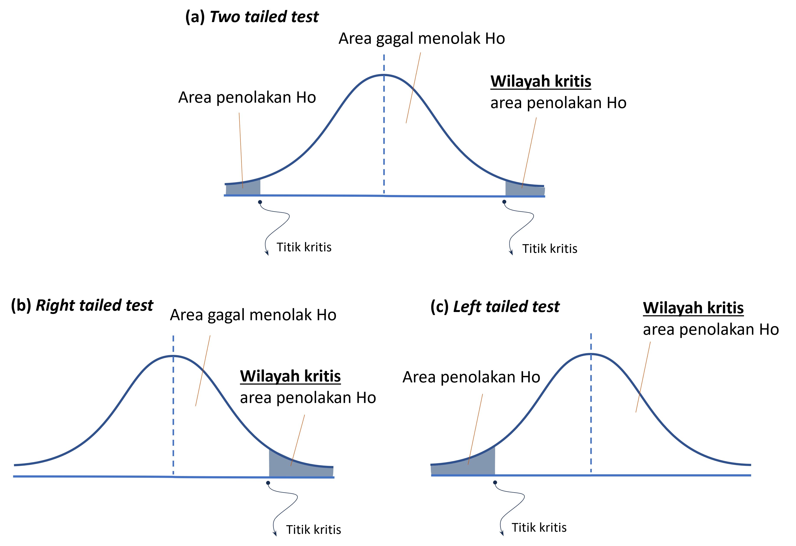
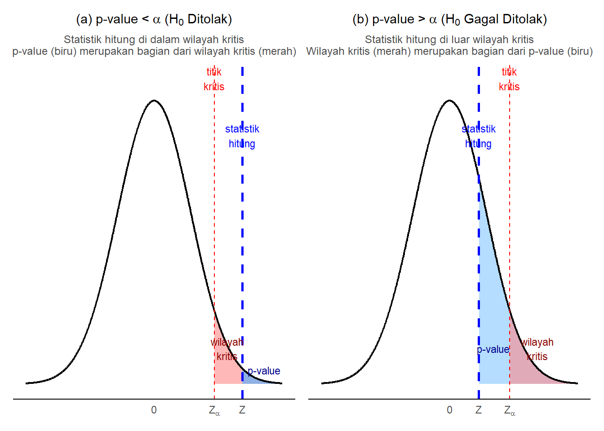
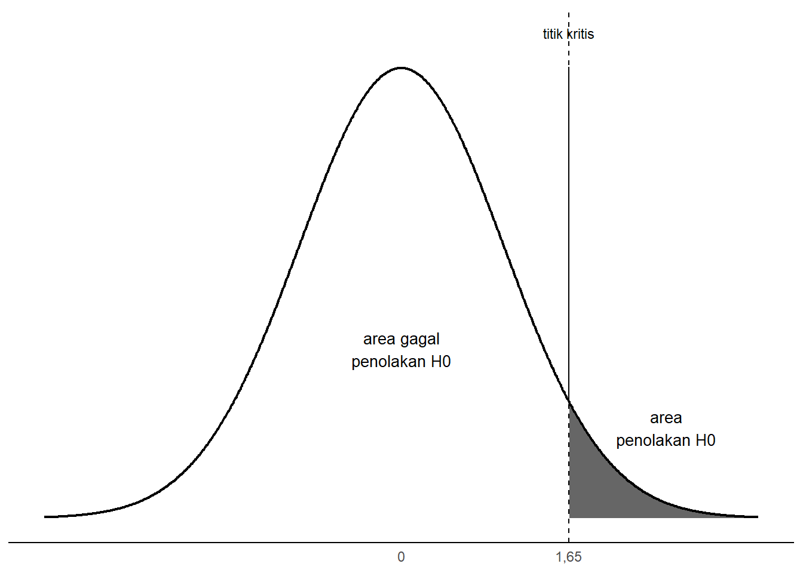
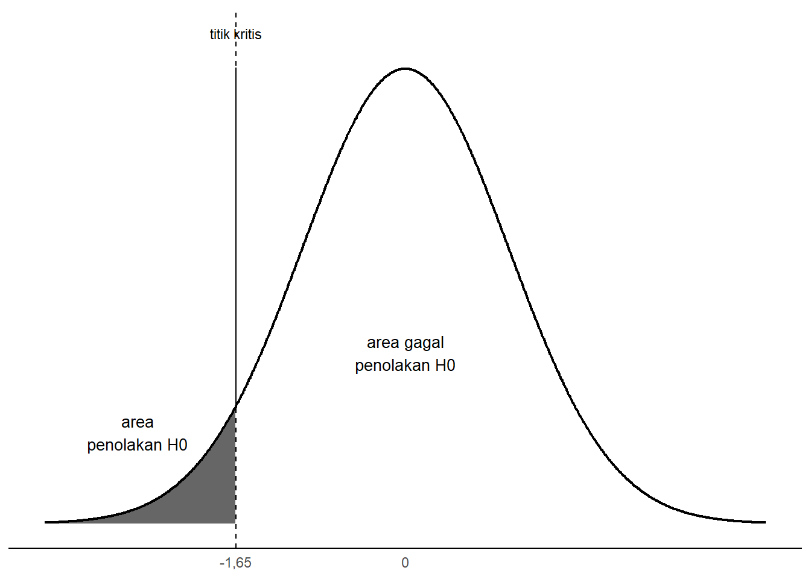
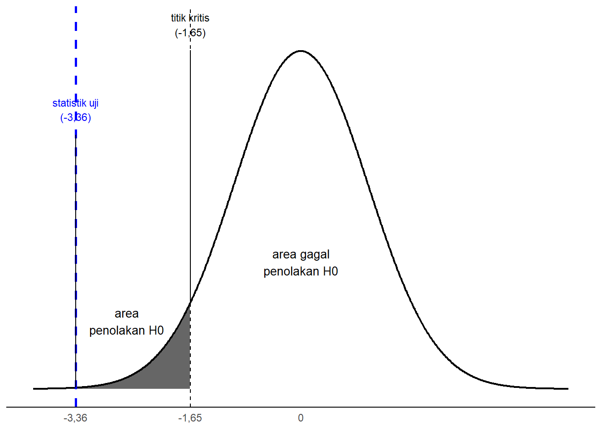
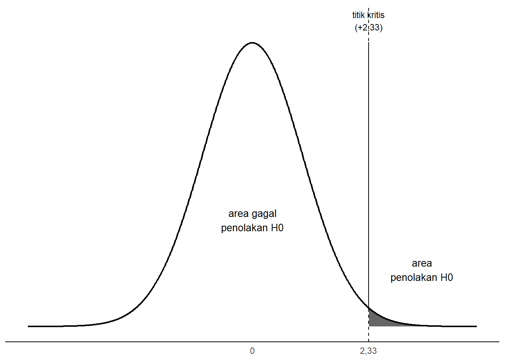
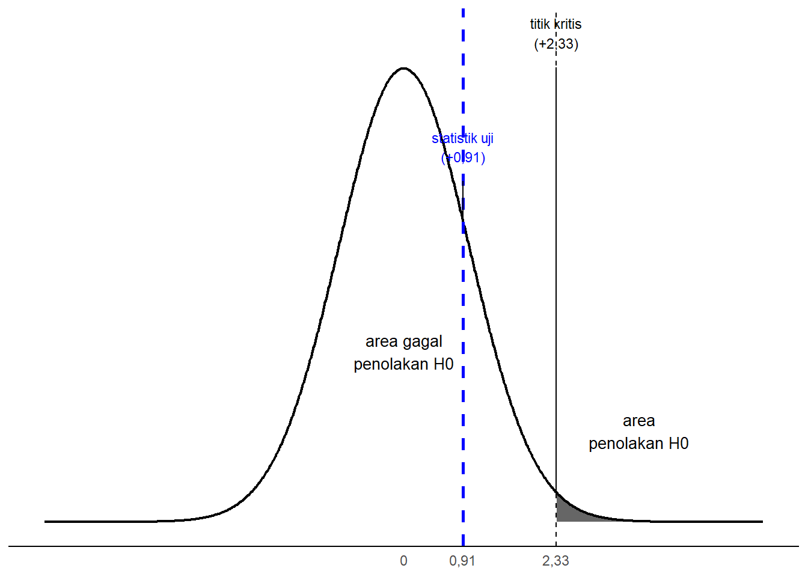

7 Uji Hipotesis Parameter Satu Populasi
Capaian Pembelajaran
Setelah mempelajari bab ini, Anda diharapkan mampu memaknai hasil dari pengujian hipotesis parameter satu populasi pada suatu kasus STP-6.1
7.1 Konsep Dasar Uji Hipotesis Parameter
Analisis statistika inferensial dengan uji hipotesis parameter digunakan untuk memperkirakan nilai dari parameter melalui pengujian hipotesis nilai sebuah parameter berdasarkan informasi yang diperoleh dari sampel, atau seperti yang telah kita pelajari, disebut statistik (Healey 2021). Hipotesis sendiri dapat dipahami sebagai dugaan awal mengenai suatu kondisi, nilai, atau keadaan parameter. Dalam metode ilmiah, hipotesis berasal dari teori, penelitian sebelumnya, atau klaim tertentu yang ingin diuji (Ewing and Park 2020; Healey 2021).
Melalui pengujian hipotesis, inferensi dilakukan dengan menarik kesimpulan terhadap hasil pengujian hipotesis kita berdasarkan statistik yang kita peroleh (Gambar 7.1). Secara sederhana, analisis diawali dengan pertanyaan: “Apakah nilai parameter \(\mu = b\)?”. Bentuk pertanyaan ini bisa kita ubah juga menjadi bentuk pernyataan, atau hipotesis, yakni “nilai parameter kita \(b\) (\(\mu = b\)).” Kesimpulan yang kita akan ambil nanti hanya ada di antara dua pilihan: menerima atau menolak hipotesis tersebut.

Gambar 7.1: Ilustrasi Alur Hubungan Parameter, Sampel, dan Inferensinya
Studi Kasus: Alur Logika Evaluasi Makan Bergizi Gratis (MBG)
Sebagai pelengkap dari ilustrasi alur pengujian di atas, mari perhatikan kasus evaluasi kepuasan program Makan Bergizi Gratis (MBG). Pemerintah ingin mengetahui rata-rata tingkat kepuasan dari seluruh penerima manfaat (populasi) di mana nilai sejatinya belum diketahui (\(\mu = \,?\)). Pemerintah memiliki pertanyaan evaluasi: “Apakah benar program MBG memberikan rata-rata skor kepuasan hingga mencapai nilai standar 80?” Pertanyaan ini kemudian disusun menjadi pernyataan sasaran (hipotesis) bahwa “Rata-rata kepuasan populasi adalah 80” (\(\mu = 80\)).
Untuk membuktikan apakah pernyataan asumsi ini bisa dipertahankan, dilakukan pengambilan sampel secara acak terhadap 200 responden. Dari data sampel tersebut, diperoleh nilai statistik rata-rata kepuasan sebesar 95 (\(\bar{x} = 95\)). Nilai bukti dari data sampel (\(\bar{x}=95\)) inilah yang digunakan sebagai landasan analisis (uji) untuk mempertanyakan keabsahan dari klaim awal (\(\mu=80\)). Puncak dari uji ini bermuara pada kesimpulan: yakni apakah pernyataan sasaran dapat tetap dilanggengkan (diterima) atau justru harus digugurkan (ditolak) karena dibantah oleh bukti empiris.
7.2 Perbedaan Uji Hipotesis Parameter dengan Estimasi Parameter
Estimasi parameter dan uji hipotesis parameter sama-sama bertujuan memperkirakan nilai parameter. Akan tetapi, keduanya melakukannya dengan cara yang berbeda. Estimasi parameter menghasilkan suatu rentang nilai yang memuat parameter-parameter yang mungkin* bagi parameter populasi. Pertanyaan yang dijawab berupa “Berapa kira-kira nilai rata-rata populasi?”
Sementara itu, uji hipotesis parameter berfokus pada penerimaan atau penolakan dugaan kita tentang hipotesis terhadap parameter. Pertanyaan yang dijawab berupa “Jika saya menduga bahwa rata-rata populasi adalah \(b\), apakah dugaan tersebut dapat diterima?”
7.3 Asumsi-asumsi yang Harus Dipenuhi dalam Menguji Hipotesis Parameter
Sebelum menguji hipotesis untuk parameter yang kita ingin inferensi, kita harus menyatakan sejumlah asumsi yang harus dipenuhi. Mengapa hal ini penting? Setiap alat uji statistik dibangun di atas model probabilitas teoretis tertentu. Apabila data kita melanggar asumsi-asumsi dasar tersebut, maka keakuratan perhitungan probabilitasnya (seperti perolehan p-value) akan terganggu, sehingga simpulan inferensi ke populasi menjadi tidak valid.
Secara umum, ada tiga asumsi yang harus dipenuhi dalam menguji hipotesis parameter, yaitu:
- Independensi: Sampel harus diambil secara acak dan independen.
- Tingkat pengukuran: Variabel yang diukur harus berada pada tingkat pengukuran yang sesuai dengan alat uji yang digunakan.
- Bentuk distribusi statistik: Distribusi statistik (sampling distribution) berbentuk normal
Studi Kasus: Memeriksa Asumsi pada Evaluasi MBG
Mari kita perhatikan kembali kasus evaluasi program Makan Bergizi Gratis (MBG) yang melibatkan 200 responden sebelumnya. Apakah kasus tersebut terbukti memenuhi ketiga asumsi pengujian hipotesis?
- Independensi: Pengambilan sampel 200 responden dilakukan secara acak. Artinya, setiap responden memiliki peluang yang sama untuk terpilih sehingga nilai satu observasi tidak terkait dengan observasi lainnya. Asumsi independensi terpenuhi.
- Tingkat pengukuran: Variabel yang diukur adalah skor kepuasan, sebuah takaran numerik (seperti skor rata-rata \(95\)) dengan standar ukur yang konstan (interval-rasio). Asumsi tingkat pengukuran terpenuhi.
- Bentuk distribusi statistik: Berhubung kita mengukur sampel berukuran besar (\(n = 200\), lebih dari 100), Teorema Limit Sentral menjamin bahwa distribusi probabilitas nilai rata-ratanya mendekati distribusi normal secara praktis. Asumsi kenormalan kurva dapat terpenuhi.
Oleh karena seluruh prasyarat dasarnya terpenuhi, barulah tahapan inferensi berikutnya berhak kita lanjutkan secara ilmiah.
7.4 Hipotesis Kosong dan Hipotesis Alternatif
Sebagaimana yang sudah dibahas di subbab 7.1 dan 7.2, inferensi dilakukan dengan menguji hipotesis yang mengandung pernyataan terhadap parameter, yakni mana hipotesis yang bisa kita terima?
Oleh karena kita harus memilih, maka minimal kita memiliki dua jenis (dan memang tidak lebih) hipotesis, yaitu hipotesis kosong (\(H_0\)) dan hipotesis alternatif (\(H_1\) atau \(H_a\)) yang masing-masing akan dijelaskan dengan rinci sebagai berikut.
7.4.1 Hipotesis Kosong
Hipotesis kosong (null hypothesis) muncul dari prinsip ilmiah bahwa pengetahuan harus dapat dibuktikan oleh data. Konsekuensinya, peneliti tidak bisa langsung membenarkan suatu klaim atau fenomena baru secara sepihak sebelum memiliki bukti empiris (data). Oleh karena itu, prosedur yang paling logis adalah menetapkan hipotesis kosong sebagai pijakan awal; yakni sebuah kerangka netral (status quo) yang berasumsi bahwa dugaan baru tersebut belum terbukti dan kondisi yang ada diasumsikan tidak mengalami perubahan dari standar umumnya.
Di sinilah statistik hasil pengumpulan data memainkan perannya: ia tidak digunakan untuk menyusun pernyataan hipotesis kosong itu sendiri, melainkan didatangkan belakangan sebagai alat bukti untuk menguji apakah status quo tersebut masih layak dipertahankan atau justru sangat lemah sehingga harus ditolak (Healey 2021).
Dalam pengertian matematis, hipotesis kosong yang merupakan kondisi netral atau status quo ini dinyatakan dengan menggunakan simbol persamaan (\(=\)). Oleh karena itu, penulisan hipotesis kosong selalu menggunakan simbol persamaan, misalnya \(\mu = \mu_0\) atau \(P = P_0\). Secara umum, penulisan hipotesis nol adalah:
\[ H_0 : \text{parameter} = \text{nilai dugaan} \tag{7.1} \]
Secara khusus, jika kita menyatakan hipotesis parameter rata-rata dan proporsi, kita menyebut \(\text{nilai dugaan}\) ini dengan notasi sesuai parameternya dan diberi subscript \(0\).
\[ \begin{aligned} &H_0 : \mu = \mu_0, \\ &H_0 : P = P_0 \end{aligned} \tag{7.2} \]
Studi Kasus: Menentukan Hipotesis Kosong pada Evaluasi MBG
Misalkan kita memiliki pertanyaan evaluasi: “Apakah benar bahwa program MBG berhasil dengan memberikan kepuasan kepada masyarakat?”. Kita pun menetapkan nilai 80 sebagai ambang kepuasan masyarakat. Dalam hal ini, ada dua kemungkinan kondisi yang terjadi:
- program tidak memberikan kepuasan kepada masyarakat sehingga rata-rata nilai 80 (atau mungkin kurang); atau
- program berhasil memberikan kepuasan kepada masyarakat sehingga rata-rata nilai lebih dari 80.
Kemungkinan pertama, yaitu “program tidak memberikan kepuasan kepada masyarakat”, menggambarkan kondisi netral atau tidak ada perbedaan. Oleh karena itu, pernyataan ini dijadikan sebagai hipotesis kosong (\(H_0\)) dan dituliskan dengan simbol persamaan (\(=\)). Secara matematis, hipotesis kosong untuk rata-rata skor kepuasan ini dapat dinyatakan sebagai berikut:
\[H_0: \mu = 80\]
Dalam kasus ini, karena kita menetapkan nilai minimal masyarakat “puas” adalah pada rata-rata skor = 80, dugaan terhadap rata-rata skor kepuasan populasi adalah 80, sehingga \(\mu_0 = 80\).
7.4.2 Hipotesis Alternatif
Sementara itu, hipotesis alternatif (alternative hypothesis \(H_1\)) adalah klaim kita terhadap keadaan netral atau standar yang diasumsikan dalam hipotesis kosong (Healey 2021). Jika hipotesis kosong mewakili status quo bahwa “tidak ada yang terjadi”, klaim dalam hipotesis alternatif justru menantang hal tersebut dengan menyatakan bahwa “ada sesuatu yang berubah atau berdampak” sehingga perlu dibuktikan. Dengan kata lain, hipotesis alternatif menyatakan adanya perbedaan yang ingin dibuktikan peneliti.
Hipotesis alternatif ini dapat berbentuk tidak berarah, misalnya hanya menyatakan “ada perbedaan” tanpa menyebutkan ke arah mana perbedaannya, atau berarah, yaitu menyatakan secara spesifik bahwa suatu kondisi “lebih besar”, “lebih kecil”, atau “lebih tinggi” dibandingkan standar yang ada.
Secara rinci ragam bentuk hipotesis alternatif ini adalah sebagai berikut (Tjokropandojo, Maryati, and Faoziyah 2021):
- Kasus “tidak sama dengan” (\(\neq\)) digunakan ketika dugaan hanya menyatakan “ada perbedaan”, tanpa menyebutkan lebih besar atau lebih kecil.
- Kasus “lebih dari” (\(>\)) digunakan ketika dugaan menyatakan bahwa parameter populasi lebih besar daripada nilai dugaan.
- Kasus “kurang dari” (\(<\)) digunakan ketika dugaan menyatakan bahwa parameter populasi lebih kecil daripada nilai dugaan.
Adapun bentuk matematis dari hipotesis alternatif yang mungkin dipilih ditampilkan pada Tabel 7.1 berikut.
| No | Bentuk Kasus | Persamaan Matematis | Interpretasi |
|---|---|---|---|
| 1 | Tidak sama dengan | \(H_1: \mu \neq \mu_0\) | Rata-rata parameter tidak sama dengan nilai dugaan |
| 2 | Lebih dari | \(H_1: \mu > \mu_0\) | Rata-rata parameter lebih besar nilai dugaan |
| 3 | Kurang dari | \(H_1: \mu < \mu_0\) | Rata-rata parameter lebih kecil (tidak sama) dengan nilai dugaan |
Studi Kasus: Menentukan Hipotesis Alternatif pada Evaluasi MBG
Pada evaluasi kepuasan program MBG, hipotesis alternatif mencerminkan kemungkinan kondisi ke-2, yaitu “program berhasil memberikan kepuasan kepada masyarakat sehingga rata-rata nilai lebih dari 80”. Ini adalah contoh kasus untuk bentuk hipotesis alternatif yang berarah karena menggunakan pertidaksamaan (ada kata “lebih dari”). Dengan demikian, penulisan hipotesis alternatif untuk kasus ini adalah sebagai berikut:
\[ H_1: \mu > 80 \]
7.4.3 Pentingnya Menentukan Bentuk Hipotesis Alternatif
Memilih bentuk hipotesis alternatif sesuai yang dijelaskan pada Tabel 7.1 sangat penting karena ini menjadi penentu posisi wilayah kritis pada kurva distribusi statistik sampel, yang menjadi penentu kita menolak/menerima hipotesis kosong. Posisi ini disebut tail (ekor) yang merupakan istilah untuk posisi wilayah kritis sebagaimana yang dijelaskan lebih rinci pada subbab berikutnya.
7.4.4 Kemungkinan Hasil Pengujian Hipotesis: “Menerima \(H_0\)” atau “Gagal Menolak \(H_0\)”?
Hasil dari pengujian hipotesis hanya memiliki dua kemungkinan, yaitu menolak atau gagal menolak hipotesis kosong (\(H_0\)). Kita tidak menggunakan diksi “menerima” hipotesis kosong karena pendekatan statistik bukan untuk membuktikan bahwa hipotesis kosong (\(H_0\)) benar. Fokus pengujian hipotesis adalah mencari kemungkinan untuk menolak hipotesis kosong (\(H_0\)), bukan membuktikan kebenarannya. Dengan cara pandang ini, proses pengolahan data menjadi lebih mudah dipahami: kita mencari bukti untuk menolak dugaan awal, bukan membuktikan bahwa dugaan awal itu pasti benar.
Catatan: Analogi Pengadilan
Pengujian hipotesis dapat dianalogikan seperti proses peradilan di pengadilan. Dalam analogi ini, posisi terdakwa adalah hipotesis kosong (\(H_0\)), alat bukti di persidangan adalah data sampel (statistik hitung), dan vonis pengadilan adalah hasil uji statistiknya.
Sebagaimana asas praduga tak bersalah, dari awal proses pengadilan selalu diasumsikan bahwa terdakwa tidak bersalah (kondisi awal netral). Tugas peneliti adalah mengumpulkan alat bukti (observasi dan data sampel) untuk mendukung dakwaan bahwa telah terjadi sesuatu yang menyimpang (hipotesis alternatif).
Jika bukti dari data sampel sangat kuat dan meyakinkan, maka pengujian akan menolak \(H_0\) (terdakwa divonis bersalah). Namun, jika bukti-bukti data sampel kurang kuat, kaidah statistik tidak otomatis menyimpulkan “kami memastikan Anda tidak bersalah” (menerima \(H_0\)). Sebaliknya, keputusan yang diambil adalah “bukti terlalu lemah untuk membuktikan Anda bersalah”. Dalam bahasa statistik, ini disebut dengan gagal menolak \(H_0\), yakni saat alat bukti (statistik sampel) tidak cukup memadai untuk menggugurkan dugaan mula-mula (status quo) yang kita miliki.
7.4.5 Menentukan Hasil Pengujian Hipotesis Parameter
Penentuan hasil pengujian hipotesis dilakukan dengan menggabungkan tiga besaran penting: titik kritis, wilayah kritis dan nilai p (p-value). Seluruhnya didasarkan pada konsep perhitungan probabilitas pada distribusi statistik sebagaimana yang dijelaskan pada subbab 5.7.3.
7.4.5.1 Titik Kritis dan Wilayah Kritis
Sesuai konsep distribusi statistik normal, titik kritis (critical value) sebenarnya adalah nilai \(Z\) pada distribusi statistik yang menandai batas awal dari wilayah kritis (critical region), sehingga disebut juga nilai \(Z_{kritis}\) atau \(Z_{critical}\)/\(Z_{crit}\). Wilayah kritis adalah wilayah penolakan \(H_0\) karena wilayah ini mencakup nilai statistik yang dianggap “tidak mungkin” ditemukan jika kita gagal menolak \(H_0\) (Healey 2021). Praktisnya, titik kritis menjadi pemisah kedua area untuk menentukan apakah \(H_0\) ditolak atau gagal ditolak.
Wilayah kritis ditentukan oleh dua hal: tingkat signifikansi (\(\alpha\)) dan bentuk hipotesis alternatif. Secara grafis, wilayah kritis sebenarnya adalah wilayah (c) pada Gambar 5.16. Penentuan titik kritisnya dilakukan dengan memanfaatkan tabel distribusi, yaitu Tabel Z atau Tabel Distribusi Normal, seperti yang sudah dipelajari di 5.7.4 untuk ukuran sampel besar, dan Tabel Distribusi t untuk ukuran sampel kecil. Untuk saat ini, dapat kita sepakati bahwa ukuran sampel besar adalah jumlah sampel lebih dari 100, sedangkan sampel dengan jumlah 100 atau kurang digolongkan sebagai sampel kecil (Vaus 2014; Kachigan 1986).
Seperti yang telah dijelaskan, untuk menentukan wilayah kritis kita harus memperhatikan juga bentuk hipotesis alternatif yang telah dirumuskan. Inilah yang dimaksud pada subbab 7.4.3:
Kasus tidak sama dengan (two tailed)
Kasus tidak sama dengan adalah bentuk hipotesis tanpa arah, sehingga wilayah kritis akan terbagi dua secara sama rata di ekor kurva. Apabila kita menetapkan \(\alpha = 5\%\), maka masing-masing ekor akan menampung \(\alpha/2 = 2,5\%\). Dalam hal ini, titik kritis dihitung berdasarkan nilai \(\alpha/2\).Kasus lebih dari (right tailed)
Selanjutnya untuk bentuk lebih dari, wilayah kritis hanya berada di ekor kanan kurva. Dengan \(\alpha = 5\%\), titik kritis ditentukan langsung berdasarkan nilai \(\alpha\) tersebut.Kasus kurang dari (left tailed)
Wilayah kritis akan berada di ekor sebelah kiri. Sama halnya dengan bentuk lebih dari, nilai titik kritis ditentukan langsung berdasarkan nilai \(\alpha\) yang digunakan.
Ketiga bentuk hipotesis alternatif ini akan menghasilkan wilayah kritis yang berbeda-beda, seperti yang disajikan pada Gambar 7.2 berikut.

Gambar 7.2: Ilustrasi Titik Kritis pada Kurva Distribusi Normal
7.4.5.2 Nilai Statistik Uji dan Nilai p (p-value)
Setelah titik kritis ditetapkan (\(Z_{crit}\) untuk sampel besar atau \(t_{crit}\) untuk sampel kecil), kita bisa mengambil dua pendekatan untuk menentukan hasil pengujian: pendekatan statistik uji atau nilai-p (p-value).
Pendekatan statistik uji (test statistic) berupa Z atau t, tergantung jenis distribusi yang digunakan, menggunakan nilai statistik uji yang dihitung dari data sampel kita. Nilai statistik uji tersebut kemudian dibandingkan dengan titik kritis yang telah diperoleh sebelumnya dan diperhatikan posisinya terhadap wilayah kritis. Ini yang akan menentukan apakah hipotesis kosong kita ditolak atau gagal ditolak:
Jika nilai statistik uji tidak jatuh ke dalam wilayah kritis, maka hasil pengujian kita adalah hipotesis kosong gagal ditolak (\(H_0\) gagal ditolak).
Jika nilai statistik uji jatuh di dalam wilayah kritis, maka hasil pengujian kita adalah hipotesis kosong dapat ditolak (\(H_0\) ditolak).
Nilai statistik uji untuk rata-rata dihitung dengan rumus berikut:
\[ \begin{equation} Z = \frac{\bar{x} - \mu_0}{s / \sqrt{n}} \tag{7.3} \end{equation} \]
dengan:
- \(Z\) : nilai statistik uji
- \(\bar{x}\) : rata-rata sampel
- \(\mu_0\) : nilai dugaan
- \(s\) : simpangan baku sampel
- \(n\) : ukuran sampel
Sedangkan, untuk proporsi, statistik ujinya dihitung dengan rumus berikut:
\[ \begin{equation} Z = \frac{\hat{p} - p_0}{\sqrt{\frac{p_0(1 - p_0)}{n}}} \tag{7.4} \end{equation} \]
dengan:
- \(Z\) : nilai statistik uji
- \(\hat{p}\) : proporsi sampel
- \(p_0\) : proporsi dugaan
- \(n\) : ukuran sampel
Nilai p atau p-value adalah cara lain selain titik kritis untuk menentukan nasib \(H_0\). Secara ringkas dan sederhana, p-value dapat dibayangkan semacam “peluang kebetulan”, yakni probabilitas yang menjawab pertanyaan: “seberapa mungkin bukti dari data yang kita dapatkan ini terjadi sekadar karena kebetulan semata (dengan anggapan \(H_0\) benar)?” Semakin kecil nilai peluang ini, semakin tidak masuk akal pula bagi kita untuk percaya bahwa hasil pengamatan dari sampel tersebut hanyalah suatu kebetulan, sehingga \(H_0\) menjadi sangat wajar untuk ditolak.
Penolakan \(H_0\) didasarkan pada perbandingannya dengan nilai signifikansi (\(\alpha\)) yang kita gunakan.
- Jika nilai p-value lebih besar dari \(\alpha\), maka kita gagal menolak \(H_0\) (Gambar 7.3 (a)).
- Jika nilai p-value lebih kecil dari \(\alpha\), maka kita menolak \(H_0\) (Gambar 7.3 (b)).

Gambar 7.3: Ilustrasi Perbandingan Nilai p (p-value) dengan Wilayah Kritis (Uji Satu Ekor)
7.4.6 Langkah-langkah Pengujian Hipotesis
Berdasarkan konsep-konsep yang sudah kita pelajari sebelunya, berikut adalah rangkuman langkah-langkah pengujian hipotesis.
- Menyatakan asumsi awal (7.3)
- Menetapkan hipotesis kosong dan alternatif (7.4.1 dan 7.4.2)
- Menetapkan wilayah kritis dari signifikansi (7.4.5.1)
- Mencari nilai titik kritis (7.4.5.1)
- Mencari nilai statistik uji (7.4.5.2)
- Membandingkan nilai statistik uji dan titik kritis (7.4.5.2)
- Menarik kesimpulan dan memaknai hasil pengujian.
Studi Kasus: Melanjutkan Langkah Pengujian Hipotesis MBG
Mari kita lanjutkan pembahasan evaluasi program MBG ini. Sebelumnya di subbab hipotesis, kita telah merumuskan hipotesis kosong dan alternatif sebagai berikut:
\[H_0: \mu = 80\] \[H_1: \mu > 80\]
Berdasarkan hasil survei terhadap sampel berukuran besar yakni 200 orang (\(n=200\)), diperoleh rata-rata skor kepuasan (\(\bar{x}\)) adalah 95 dengan simpangan baku (\(s\)) 2,3. Mari kita lakukan sisa langkah-langkah pengujian (langkah b s.d. f) dengan menggunakan tingkat signifikansi 5% (\(\alpha = 5\%\)).
b. Menetapkan Wilayah Kritis
Berdasarkan hipotesis alternatif (\(H_1\)), arah ketidaksamaan yang digunakan adalah “lebih dari” (\(>\)). Oleh karena itu, kita menggunakan uji ekor kanan (right-tailed test).
c. Mencari Nilai Titik Kritis
Mengingat ukuran sampel kita besar (\(n = 200 > 100\)), kita menggunakan Distribusi Z sebagai acuan penentuan kritisnya. Dengan tingkat signifikansi \(\alpha = 5\%\), kita mendapati nilai titik kritis di tabel Z adalah \(Z_{kritis} = +1,65\). Titik ini menjadi batas awal di mana nilai \(Z > +1,65\) merupakan wilayah kritis.

Gambar 7.4: Distribusi Sampling dan Wilayah Kritis Kasus MBG
d. Mencari Nilai Statistik Uji
Kita akan menghitung nilai statistik hitung Z berdasarkan data sampel:
- \(\bar{x} = 95\)
- \(\mu_0 = 80\)
- \(s = 2,3\)
- \(n = 200\)
\[ \begin{aligned} Z &= \frac{\bar{x} - \mu_0}{s / \sqrt{n}} \\ &= \frac{95 - 80}{2,3 / \sqrt{200}} \\ &= \frac{15}{0,1626} \\ &= +92,25 \end{aligned} \]
Nilai statistik uji yang diperoleh adalah \(Z = +92,25\).
e. Membandingkan Nilai Statistik Uji dan Titik Kritis
Nilai statistik uji \(Z_{hitung} = +92,25\) jatuh sejauh mungkin ke dalam wilayah kritis di sebelah kanan karena nilainya lebih besar dari titik kritis \(Z_{kritis} = +1,65\). Oleh karena itu, keputusannya adalah menolak hipotesis kosong (\(H_0\)).
f. Menarik Kesimpulan dan Memaknai Hasil
Dengan menolak \(H_0\), terbukti bahwa rata-rata skor kepuasan masyarakat yang diperoleh dari sampel, yaitu 95, berada secara signifikan di atas ambang batas 80. Hasil secara saintifik ini selaras dan dapat memastikan hipotesis alternatif kita (\(H_1\)), yaitu program MBG dinilai berhasil karena skor kepuasan populasinya diprediksi kuat melampaui indikator yang ditetapkan.
Mari kita pelajari kasus lain yang langkah-langkahnya lebih terlihat dari awal sampai akhir, juga untuk statistik proporsi
Studi Kasus: Layanan Bus Kampus
Dengan menggunakan data pada subbab sebelumnya mengenai jarak tempat tinggal mahasiswa ITERA menuju kampus yang menghasilkan rata-rata 4,95 km dan simpangan baku 2,23 km didasarkan pada jawaban 333 responden, pihak kampus merespons kebutuhan mobilitas mahasiswa dengan merencanakan penyediaan layanan Bus Kampus. Namun, layanan ini hanya akan efektif jika mayoritas mahasiswa tinggal pada jarak dekat (\(\leq 5\) km) dari kampus dan apabila lebih dari 80% mahasiswa berminat terhadap layanan tersebut.
Pengujian Hipotesis Rata-rata Populasi
Pada tingkat kepercayaan 95%, apakah layanan Bus Kampus akan efektif melayani seluruh mahasiswa ITERA, yang dengan bentuk pertanyaan lain, apakah benar mahasiswa ITERA tinggal \(\leq 5\) km dari kampus?
Memeriksa Asumsi Pengujian
- Independensi: Pengambilan sampel 333 responden diasumsikan dilakukan secara acak sehingga hasil pengamatan antarmahasiswa saling bebas. Asumsi independensi terpenuhi.
- Tingkat pengukuran: Variabel yang dikaji adalah jarak tempuh (km), sebuah skor ukur yang numerik dan konstan (interval-rasio). Asumsi tingkat pengukuran terpenuhi.
- Bentuk distribusi statistik: Oleh karena jumlah sampel tergolong besar (\(n = 333 > 100\)), Teorema Limit Sentral dapat digunakan sehingga distribusi probabilitas rata-rata ukurnya diasumsikan berdistribusi normal secara praktis. Asumsi kenormalan terpenuhi.
Menetapkan Hipotesis Kosong dan Alternatif (\(H_0\) dan \(H_1\))
Bentuk kondisi netral yang dapat dijadikan hipotesis kosong adalah rata-rata sama dengan 5 km. Untuk bentuk hipotesis alternatifnya, kita berusaha membuktikan agar klaim kita bahwa “penyediaan bus akan efektif saat rata-rata jarak tempuh dari tempat tinggal <5 km” bisa menolak hipotesis kosong. Dengan demikian, bentuk hipotesis alternatif kita adalah kondisi di mana penyediaan bus akan efektif (<5 km).
\[ H_0: \mu = 5 \text{ km}\\ H_1: \mu < 5 \text{ km} \]
Pada hipotesis tersebut, \(H_0\) menunjukkan kondisi bahwa rata-rata jarak adalah 5 km. \(H_1\) berusaha menolak hipotesis kosong dengan mengeklaim bahwa penyediaan bus efisien, di saat rata-rata <5 km.
Menetapkan Wilayah Kritis dari Signifikansi
Karena kita menggunakan sampel besar, kita menggunakan distribusi Z. Lalu, kita menggunakan tingkat kepercayaan 95%, yang berarti tingkat kepercayaan kita adalah \(\alpha = 5\% = 0,05\).
Berdasarkan subbab 7.4.5.1, dan Gambar 7.2, kita menggunakan bentuk (b) atau left-tailed.
Mencari Nilai Titik Kritis
Berdasarkan tabel Distribusi Z, nilai titik kritis untuk \(\alpha = 5\%\) left-tailed adalah \(-1,65\).

Gambar 7.5: Distribusi Sampling dan Wilayah Kritis Kasus Rata-rata Jarak ke Kampus ITERA
Mencari Nilai Statistik Uji
Kita menggunakan persamaan (7.3) untuk menghitung statistik uji kita.
- \(\bar{x} = 4,59\)
- \(\mu_0 = 5\)
- \(s = 2,23\)
- \(n = 333\)
\[ \begin{aligned} Z &= \frac{\bar{x} - \mu_0}{s / \sqrt{n}} \\ &= \frac{4,59 - 5}{2,23 / \sqrt{333}} \\ &= \frac{-0,41}{0,122} \\ &= \frac{-0,41}{0,122} \end{aligned} \]
Membandingkan Nilai Statistik Uji dan Titik Kritis
- \(Z_{hitung} = -3,36\)
- \(Z_{kritis} = -1,65\)
Nilai statistik uji jatuh ke dalam wilayah kritis karena nilai \(Z_{hitung}\) (-3,36) lebih kecil dari \(Z_{kritis}\) (-1,65) sehingga berada di sebelah kirinya (masuk ke dalam area penolakan \(H_0\)) (Gambar 7.6).

Gambar 7.6: Perbandingan Nilai Statistik Uji dan Titik Kritis (Kasus Jarak ke Kampus ITERA)
Pengujian Hipotesis Proporsi Populasi
Program dinilai akan berhasil apabila lebih dari 80% mahasiswa berminat. Berdasarkan survei terhadap 333 responden, diketahui 82% mahasiswa berminat. Dengan tingkat kepercayaan 99%, kita uji hipotesis parameter proporsi ini.
Memeriksa Asumsi Pengujian
- Independensi: Sebagaimana pada uji rata-rata, sampel 333 responden ini diasumsikan ditarik secara acak. Asumsi independensi terpenuhi.
- Tingkat pengukuran: Respons yang diberikan mahasiswa bersifat kategorik nominal dikotomis (hanya ada dua kemungkinan: “berminat” atau “tidak berminat”), sesuai dengan alat ukur proporsi. Asumsi tingkat pengukuran terpenuhi.
- Bentuk distribusi statistik: Mempertimbangkan bahwa ukuran sampel yang digunakan sangat besar (\(n = 333\)), distribusi statistik dari proporsi sampel tersebut cukup memadai untuk didekati dengan distribusi normal. Asumsi kenormalan terpenuhi.
Menetapkan Hipotesis Kosong dan Alternatif (\(H_0\) dan \(H_1\))
Bentuk kondisi netral yang dapat dijadikan hipotesis kosong adalah proporsi mahasiswa yang berminat sama dengan 80%. Untuk bentuk hipotesis alternatifnya, kita berusaha untuk membuktikan klaim bahwa program akan berhasil jika minat melebihi 80%. Dengan demikian, bentuk hipotesis alternatif kita adalah \(H_1: P > 0,8\).
\[ H_0: P = 0,8 \\ H_1: P > 0,8 \]
Pada hipotesis tersebut, \(H_0\) menunjukkan kondisi bahwa besaran proporsi adalah 0,8. \(H_1\) berusaha menolak hipotesis kosong dengan mengeklaim bahwa program akan berhasil di saat proporsi > 0,8.
Menetapkan Wilayah Kritis dari Signifikansi
Oleh karena kita menguji proporsi, kita menggunakan metode sampel besar, sehingga titik statistik acuan adalah distribusi Z. Lalu, kita menggunakan tingkat kepercayaan 99%, yang berarti tingkat signifikansi kita adalah \(\alpha = 1\% = 0,01\).
Berdasarkan hipotesis alternatif \(H_1\) yang berarah “lebih dari” (>), kita menggunakan uji ekor kanan (right-tailed).
Mencari Nilai Titik Kritis
Berdasarkan tabel Distribusi Z, nilai titik kritis untuk \(\alpha = 1\%\) right-tailed adalah \(+2,33\).

Gambar 7.7: Distribusi Sampling dan Wilayah Kritis Kasus Proporsi Minat Bus Kampus
Mencari Nilai Statistik Uji
Kita menggunakan persamaan (7.4) untuk menghitung statistik uji kita.
- \(\hat{p} = 0,82\)
- \(p_0 = 0,8\)
- \(n = 333\)
\[ \begin{aligned} Z &= \frac{\hat{p} - p_0}{\sqrt{\frac{p_0(1-p_0)}{n}}} \\ &= \frac{0,82 - 0,8}{\sqrt{\frac{0,8(1-0,8)}{333}}} \\ &= \frac{0,02}{0,0219} \\ &= 0,91 \end{aligned} \]
Membandingkan Nilai Statistik Uji dan Titik Kritis
- \(Z_{hitung} = +0,91\)
- \(Z_{kritis} = +2,33\)
Nilai statistik uji tidak jatuh ke dalam wilayah kritis karena nilai \(Z_{hitung}\) (0,91) tidak melampaui dan lebih kecil dari titik kritis \(Z_{kritis}\) (+2,33). Titik wilayah kritis kita berada di ekor sebelah kanan (+2,33), sementara statistik uji jatuh jauh di sebelah kiri kurva sumbu nol (Gambar 7.8). Oleh karena itu, kita gagal menolak hipotesis kosong (\(H_0\)).

Gambar 7.8: Perbandingan Nilai Statistik Uji dan Titik Kritis (Kasus Proporsi Minat Bus Kampus)
Menarik Kesimpulan dan Memaknai Hasil
Karena kita gagal menolak \(H_0\), terbukti bahwa statistik proporsi sebesar 0,82 atau 82% belum memiliki cukup bukti empiris untuk menolak pernyataan bahwasanya proporsi mahasiswa yang berminat hanya 80%. Walaupun kita mendapat sampel dengan nilai 82% (>80%), hasil pengujian hipotesis menyatakan bahwa sampel kita tersebut didapatkan secara kebetulan. Oleh karena itu, secara populasi, kita bisa menyimpulkan bahwa proporsi minat mahasiswa belum mencukupi standar target kelayakan. Pihak kampus perlu mengkaji ulang atau mempertimbangkan kembali penyediaan Bus Kampus ini mengingat minimnya potensi minat mahasiswa.
Kerjakanlah soal evaluasi berikut untuk mengasah pemahaman Anda tentang pengujian hipotesis parameter baik untuk rata-rata maupun proporsi.
Soal Evaluasi 14
- Berdasarkan survei kepada 173 orang dosen ITERA pada tahun 2023, rata-rata usianya pada saat itu adalah 29 tahun dengan simpangan bakunya adalah 2,9 tahun. Jika ingin diketahui apakah rata-rata usia dosen ITERA pada tahun 2023 tersebut adalah sebenarnya sama saja dengan 30 tahun, ujilah pernyataan tersebut! Gunakan galat sebesar 5%. STP-6.1
- Tuliskan asumsi awal pengujian hipotesis!
- Tentukanlah hipotesis kosong dan hipotesis alternatifnya!
- Tentukan keputusan dalam memilih hipotesis yang diterima!
- Simpulkanlah makna dari hasil pemilihan hipotesis tersebut!
- Hasil survei kepada 427 orang mahasiswa menunjukkan bahwa proporsi pengguna sepeda motor pribadi adalah 0,56. Bagaimana hasil pengujian hipotesis yang menyatakan bahwa sebenarnya pengguna sepeda motor pada mahasiswa itu lebih dari setengahnya? Gunakan galat sebesar 5%. STP-6.1
- Tuliskan asumsi awal pengujian hipotesis!
- Tentukanlah hipotesis kosong dan hipotesis alternatifnya!
- Tentukan keputusan dalam memilih hipotesis yang diterima!
- Simpulkanlah makna dari hasil pemilihan hipotesis tersebut!
Penting! Tuliskan langkah demi langkah secara berurutan. Gambar seluruh hal yang berkaitan dengan distribusi statistik, seperti wilayah kritis, posisi titik kritis, dan posisi statistik ujinya.